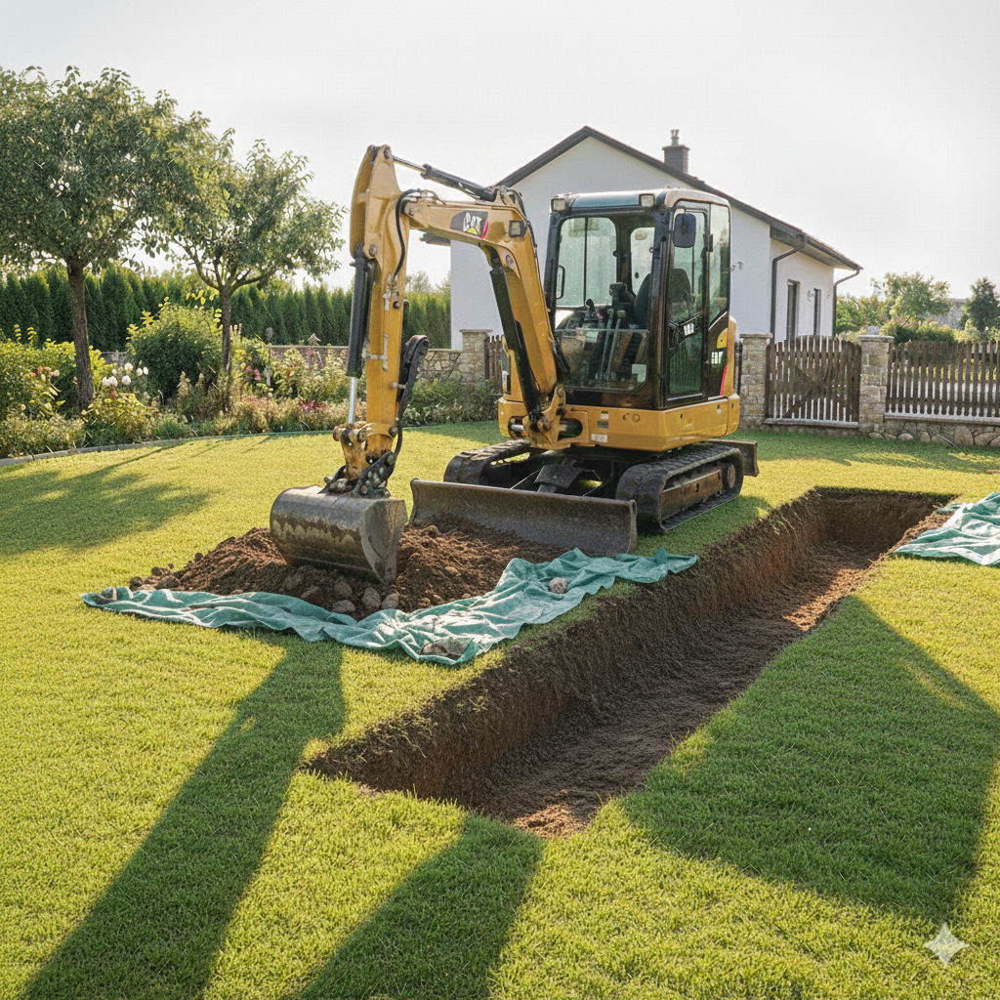
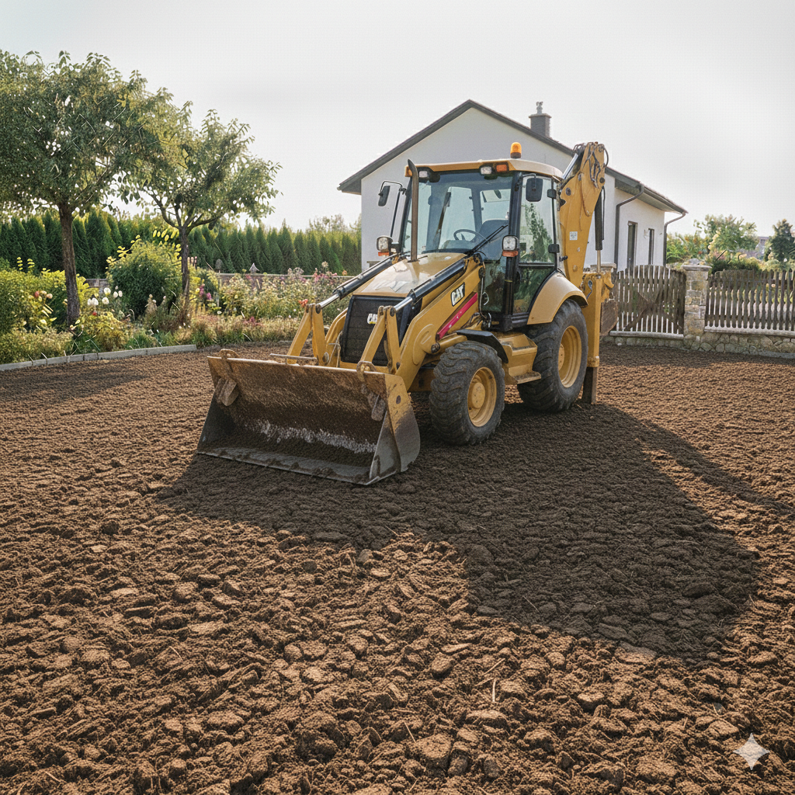
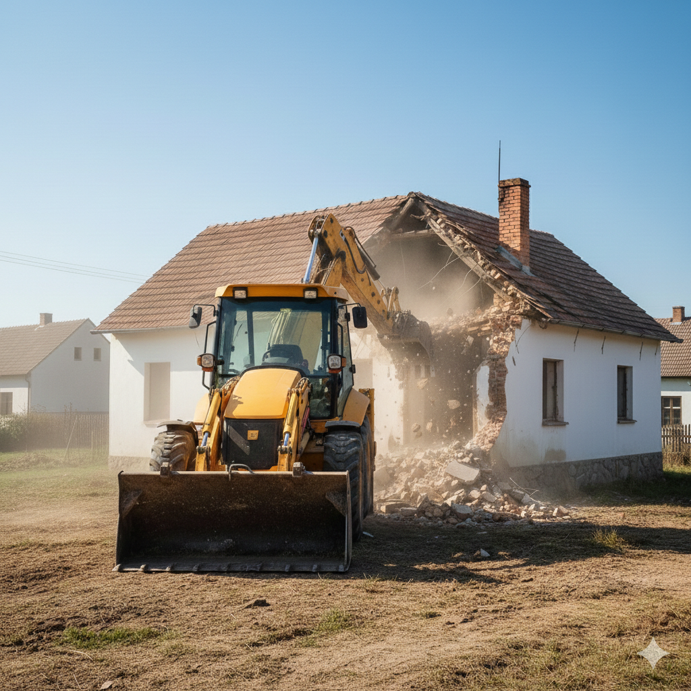

Podrobný přehled našich prací
Realizujeme projekty od malých výkopů až po rozsáhlé terénní úpravy s maximální přesností.

Výkopové práce
Naše technika nám umožňuje provádět výkopy i v těžko přístupných místech. Zaměřujeme se na precizní provedení podle projektové dokumentace.
- Výkopy pro základy rodinných domů a garáží
- Hloubení rýh pro inženýrské sítě (voda, plyn, elektřina)
- Výkopy pro bazény, jímky a septiky
- Drenážní systémy a odvodnění pozemků

Terénní úpravy
Modelace terénu je klíčová pro finální vzhled vaší zahrady nebo stavebního pozemku. Zajistíme dokonalou rovinu i svahování.
- Hrubé i čisté terénní úpravy
- Rozhrnování ornice a příprava pro trávník
- Svahování a modelace okrasných zahrad
- Odstraňování pařezů a náletových dřevin

Demoliční práce
Demolice je základem pro vaši novou stavbu nebo čistý pozemek. Zajistíme bezpečné odstranění starých objektů včetně vyčištění plochy.
- Demolice objektů a stavební drcení
- Ruční i strojní bourací práce
- Třídění, nakládka a odvoz stavební suti
- Ekologická likvidace odpadu a recyklace